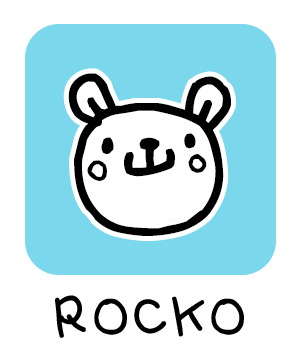

Tomoki & Friends is a conceptual children's toy and game brand designed to empower both adults and children. The concept revolves around fostering the development of essential skills, like math, time management and organization during a child's early years and up.
Inspired by anime and Scandi-Style children's interior design, I felt motivated by the commonly featured Javascript projects found in the portfolios of aspiring and new software developers/engineers. Sadly, these projects are often tagged as "too basic" or "too beginner," resulting in their portfolios being overlooked for professional software engineer/developer roles. To turn this around, I decided to embrace the simplicity of these projects by designing them to be more appealing to a younger audience.
The Math Helper is a fun, pastel version of the classic Javascript calculator project.
The Memory Matcher is a kid-friendly version of the memory game Javascript project.
The Ticking Timer features a set of buttons to start a countdown.